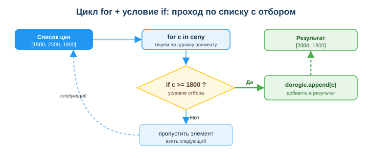

Дисциплина: Применение информационно-коммуникационных и цифровых технологий
Результат обучения: РО 2.3 — обработка и анализ данных с применением Python и ИИ · Объём темы: 6 часов
Квалификация: 4S06130103 «Разработчик программного обеспечения»
Представь обычную рабочую ситуацию. Тебе скинули список цен из интернет-магазина: [1500, 2000, 1800] — и попросили быстро ответить на три вопроса: на какую сумму товары, какая средняя цена и какие из них дороже 1800. Три числа можно сложить и в уме. Но завтра тебе пришлют не три цены, а триста. Через неделю — выгрузку на тридцать тысяч строк из базы данных. Калькулятор тут бесполезен: вручную это часы работы и неизбежные ошибки.
Именно для таких задач существует Python. Несколько строк кода — и компьютер сам пройдёт по всему списку, посчитает сумму, среднее и отберёт нужное, причём для трёх значений и для тридцати тысяч код будет почти одинаковым. В этом и сила: ты описываешь правило обработки один раз, а машина применяет его к любому объёму данных.
Тебе не нужно быть гуру языка, чтобы начать. Достаточно понять несколько строительных блоков — переменную, список, словарь, цикл и условие — и научиться их соединять. Из этих блоков собирается почти любая обработка данных, с которой ты столкнёшься в профессии: подсчёт итогов по заказам, фильтрация записей из базы, сведение ответов от сервера, подготовка чисел для отчёта или для модели машинного обучения.
И это не «учебный» навык, который потом забудешь. Любой отчёт, любая аналитика, любая модель ИИ начинается с одного и того же: данные нужно где-то хранить, прочитать, отфильтровать и свести. Разработчик ПО делает это каждый день — обрабатывает записи из базы, ответы от API, строки из файла. Умение выбрать правильный контейнер, пройти по нему циклом и отобрать нужное условием — это базовый рабочий инструмент, без которого не написать ни одного полезного модуля [1; 4]. Эта тема — фундамент, на котором дальше встанут pandas, визуализация и анализ данных с ИИ (занятия 30–32).
После изучения темы ты сможешь:
for и отбирать нужное условием if;sum), количество (len), среднее, максимум (max) и минимум (min);append;0.for — конструкция, повторяющая действие для каждого элемента набора.if — конструкция, выполняющая блок только при истинности проверки.append — метод, добавляющий элемент в конец списка.Полный список с определениями — в глоссарии (раздел 10).
Это ядро темы. Здесь мы по очереди разберём пять строительных блоков — контейнеры данных, цикл, условие, показатели и защиту от пустого списка — а затем соберём из них целую программу. К каждому блоку даны примеры кода и пошаговый разбор: что именно делает каждая строка. Если можешь — открой Google Colab [13] (бесплатный онлайн-блокнот Python в браузере, ничего ставить не нужно) и набирай примеры по ходу чтения. Код, который ты сам запустил и изменил, запоминается в разы лучше прочитанного.
Любая программа работает с данными, и данные надо где-то держать. Контейнер данных — это способ хранения значений в памяти. В Python для повседневных задач хватает трёх контейнеров: переменной, списка и словаря. Посмотри на схему «Контейнеры данных в Python» (приложение А): на ней наглядно показано, чем они отличаются. Разберём каждый.
Переменная — одна ячейка для одного значения. Это самый простой контейнер. Ты даёшь значению имя, и дальше обращаешься к нему по этому имени:
cena = 1500
print(cena) # 1500
cena = cena + 200 # положили в ту же ячейку новое значение
print(cena) # 1700Знак = здесь — не «равно» из математики, а присваивание: «положи значение справа в ячейку с именем слева». Поэтому строка cena = cena + 200 не парадокс, а команда: «возьми текущее значение cena, прибавь 200 и положи результат обратно в cena». Переменная хранит ровно одно значение — одну цену, одно имя, одно число.
Список (list) — упорядоченный набор значений. Когда значений много и они однотипны (все цены, все температуры, все оценки), их держат в списке. Список записывают в квадратных скобках через запятую:
ceny = [1500, 2000, 1800]
print(ceny) # [1500, 2000, 1800]
print(len(ceny)) # 3 — в списке три элементаУдобная картинка: список — это как один столбец таблицы, где значения идут сверху вниз по порядку. К отдельному элементу обращаются по индексу — порядковому номеру в квадратных скобках. И вот первое, что должно прочно засесть: нумерация в Python начинается с нуля, а не с единицы.
ceny = [1500, 2000, 1800]
print(ceny[0]) # 1500 — ПЕРВЫЙ элемент, индекс 0
print(ceny[1]) # 2000 — второй элемент
print(ceny[2]) # 1800 — третий (и последний) элементТо есть у списка из трёх элементов индексы — 0, 1, 2. Последний индекс на единицу меньше длины. Если ты по привычке напишешь ceny[3], программа упадёт с ошибкой IndexError: list index out of range — «такого элемента нет». Это одна из самых частых ошибок новичка, и она напрямую следует из счёта с нуля. Список можно менять: добавлять элементы, заменять их, удалять — этим он и удобен для накопления результата (увидишь в 4.3).
Словарь (dict) — пары «ключ — значение». Список хорош, когда значения однородны. Но что, если нужно сохранить одну запись о товаре, где у каждого поля своё имя — название, цена, количество? Складывать их в список плохо: придётся помнить, что под индексом 0 лежит название, под 1 — цена, и так далее. Это легко перепутать. Для таких записей есть словарь — он хранит значения не по номеру, а по ключу (имени поля). Записывают словарь в фигурных скобках:
tovar = {"name": "Мышь", "cena": 1500}
print(tovar["name"]) # Мышь — достаём по ключу "name"
print(tovar["cena"]) # 1500 — достаём по ключу "cena"Картинка: если список — это столбец, то словарь — это одна строка таблицы с подписанными полями. Главное отличие от списка — способ доступа: к списку обращаются по номеру ceny[0], а к словарю по ключу tovar["name"]. Не путай скобки и способ обращения — это разные инструменты под разные задачи.
Как выбрать контейнер — короткое правило:
cena = 1500);ceny = [1500, 2000, 1800]);tovar = {"name": "Мышь", "cena": 1500});Проверь себя на двух задачах. (1) Хранить температуры за неделю — это семь однотипных чисел по порядку, значит, список. (2) Хранить одну запись о студенте — имя, группа, балл — это разные подписанные поля одной записи, значит, словарь. Если ты уверенно отвечаешь на такие вопросы, фундамент темы у тебя уже есть.
for: пройти по каждому элементуКонтейнер выбрали — теперь надо что-то сделать с каждым его элементом: сложить, посчитать, проверить. Делать это вручную (ceny[0], потом ceny[1], потом ceny[2]) невозможно — элементов могут быть тысячи, да и количество заранее неизвестно. Для этого есть цикл for: он сам берёт элементы по одному и повторяет для каждого один и тот же блок кода [11].
Классический пример — посчитать сумму списка вручную, через цикл:
ceny = [1500, 2000, 1800]
itog = 0
for c in ceny:
itog = itog + c
print(itog) # 5300Разберём построчно, потому что здесь видна вся механика цикла:
ceny = [1500, 2000, 1800] — создали список цен.itog = 0 — завели переменную-накопитель и обнулили её. Это важный приём: прежде чем что-то накапливать, заводим «копилку» и кладём в неё ноль.for c in ceny: — начало цикла. Читается так: «для каждого элемента c из списка ceny». Переменная c на каждом шаге будет принимать значение очередного элемента. itog = itog + c — тело цикла (обрати внимание на отступ в 4 пробела — он обязателен, по нему Python понимает, что строка относится к циклу). На каждом шаге прибавляем текущий элемент к накопителю.print(itog) — эта строка БЕЗ отступа, значит, она вне цикла и выполнится один раз, после того как цикл закончит проход.Что происходит по шагам — проследи значения:
| Шаг | c (текущий элемент) |
itog до |
itog после |
|---|---|---|---|
| 1 | 1500 | 0 | 1500 |
| 2 | 2000 | 1500 | 3500 |
| 3 | 1800 | 3500 | 5300 |
После третьего шага элементы кончились, цикл завершился, и print вывел 5300. Вот так цикл «проходит по списку»: переменная c по очереди становится каждым элементом, а тело цикла выполняется столько раз, сколько элементов в списке.
Про отступы — отдельно, потому что на этом спотыкаются все. В Python отступ (4 пробела) — это не украшение, а часть синтаксиса. Именно отступом обозначается, какие строки входят в тело цикла. Сравни:
# Вариант А: print ВНУТРИ цикла (с отступом) — выведет на каждом шаге
for c in [1500, 2000, 1800]:
print(c) # выведет 1500, потом 2000, потом 1800 — три строки
# Вариант Б: print ВНЕ цикла (без отступа) — выведет один раз
itog = 0
for c in [1500, 2000, 1800]:
itog = itog + c
print(itog) # выведет 5300 — одну строку, после циклаПоменяешь отступ — поменяется поведение программы. Если увидишь ошибку IndentationError, знай: дело в отступах.
Зачем уметь писать сумму вручную, если есть готовый sum? Готовая функция sum (раздел 4.4), конечно, удобнее. Но ручной цикл — это универсальный шаблон «накопителя», который работает не только для суммы: так же считают количество подходящих элементов, ищут максимум, собирают новый список. Поняв цикл на примере суммы, ты поймёшь все остальные задачи на нём.
if: отобрать только нужноеЧасто нужно не обработать все элементы, а отобрать подходящие: цены дороже 1800, температуры выше нуля, отличников из списка оценок. Для отбора служит условие if: оно выполняет блок кода только тогда, когда проверка истинна.
Самое частое сочетание — цикл и условие вместе: проходим по списку и складываем подходящие элементы в новый список. Посмотри на схему «Цикл for + условие if» (приложение Б) — она показывает именно эту логику в виде блок-схемы. А вот код:
ceny = [1500, 2000, 1800]
dorogie = []
for c in ceny:
if c >= 1800:
dorogie.append(c)
print(dorogie) # [2000, 1800]Разбор построчно:
ceny = [1500, 2000, 1800] — исходный список.dorogie = [] — создали пустой список для результата (это «копилка», но не для числа, а для элементов).for c in ceny: — проходим по каждой цене. if c >= 1800: — проверяем условие «цена больше или равна 1800». Обрати внимание на двойной отступ у следующей строки: if вложен в for, а тело if вложено в if. dorogie.append(c) — если условие истинно, добавляем элемент в результат методом append. Если условие ложно — эта строка не выполняется, элемент просто пропускается.print(dorogie) — выводим собранный список.Проследим по шагам, что попадает в результат:
| Шаг | c |
c >= 1800? |
Действие | dorogie после |
|---|---|---|---|---|
| 1 | 1500 | Нет (ложь) | пропустить | [] |
| 2 | 2000 | Да (истина) | append | [2000] |
| 3 | 1800 | Да (>=, значит истина) |
append | [2000, 1800] |
Заметь тонкость на третьем шаге: 1800 >= 1800 — истина, потому что в операторе >= есть «или равно». Если бы стояло строгое > (if c > 1800), то 1800 не прошло бы и в результате было бы только [2000]. Один символ меняет результат — поэтому условие нужно читать внимательно.
Операторы сравнения, которые ты будешь использовать в if:
| Оператор | Значение | Пример | Результат |
|---|---|---|---|
== |
равно | o == 5 |
истина, если o равно 5 |
!= |
не равно | o != 5 |
истина, если o не 5 |
> |
больше | c > 1800 |
строго больше |
>= |
больше или равно | c >= 1800 |
больше или равно |
< |
меньше | t < 0 |
строго меньше |
<= |
меньше или равно | b <= 60 |
меньше или равно |
Важно не путать = и ==. Одиночное = — это присваивание («положи значение»), двойное == — это сравнение («равны ли?»). В условии if всегда сравнение, поэтому if o == 5, а не if o = 5 (второе — ошибка).
Шаблон «фильтр». Запомни эту конструкцию как готовый рабочий шаблон, ты будешь применять его постоянно:
rezultat = [] # 1. пустой список для результата
for element in ishodnyy: # 2. проходим по исходному списку
if element_podhodit: # 3. проверяем условие
rezultat.append(element) # 4. подходящие — в результатПодставив сюда своё условие, ты отфильтруешь что угодно: дни выше нуля, задачи дольше 30 минут, совершеннолетних участников. Это один из самых частых приёмов в обработке данных.

Складывать вручную циклом полезно для понимания, но в реальной работе для базовых показателей в Python уже есть готовые встроенные функции [11]. Они короче, быстрее и надёжнее ручного кода:
ceny = [1500, 2000, 1800]
print(sum(ceny)) # 5300 — сумма всех элементов
print(len(ceny)) # 3 — количество элементов
print(sum(ceny) / len(ceny)) # 1766.666... — среднее (сумма / количество)
print(max(ceny)) # 2000 — максимум
print(min(ceny)) # 1500 — минимумРазберём каждую функцию:
sum(ceny) — складывает все числа списка. Заменяет весь ручной цикл-накопитель из 4.2 одной строкой.len(ceny) — возвращает количество элементов (длину). Работает не только со списками, но и со строками, словарями.sum / len (сумму делят на количество). Это определение среднего арифметического: общий итог, делённый на число значений.max(ceny) и min(ceny) — наибольший и наименьший элемент.Эти пять операций — посчитать сумму, количество, среднее, максимум и минимум — и есть основа простой аналитики. К ним добавляется фильтрация из 4.3, и ты уже можешь отвечать на типичные рабочие вопросы: «сколько всего», «в среднем», «самый дорогой», «сколько подходящих под условие».
Когда нужен счётчик с условием. Иногда нужно посчитать не все элементы, а только подходящие — например, сколько в группе отличников. Готового len тут мало: считать надо с проверкой. Тогда возвращаемся к ручному циклу, но накапливаем не сумму, а счётчик:
ball = [4, 5, 3, 5, 2]
otlichniki = 0 # счётчик отличников
for o in ball:
if o == 5: # условие: оценка ровно 5
otlichniki = otlichniki + 1 # нашли пятёрку — +1
print(otlichniki) # 2Здесь видно, как соединяются три блока сразу: цикл (for) проходит по оценкам, условие (if) отбирает пятёрки, а накопитель (otlichniki) считает их количество. Это и есть «собрать программу из строительных блоков».
Мини-кейс целиком. Дан список оценок группы [4, 5, 3, 5, 2]. Нужны средний балл и число отличников. Средний: sum / len = 19 / 5 = 3.8. Отличников считаем циклом с условием if o == 5 — их 2. Одна и та же горстка блоков (контейнер, цикл, условие, функции) закрывает обе задачи.
Теперь — про надёжность кода, без которой программа красива на учебном примере и падает на реальных данных. Посмотри на безобидную строку:
spisok = [] # вдруг данных не пришло — список пустой
print(sum(spisok) / len(spisok)) # ОШИБКА!Что произойдёт: sum([]) равно 0, len([]) равно 0, и получается 0 / 0 — деление на ноль. Python остановит программу с ошибкой ZeroDivisionError: division by zero. На учебном списке из трёх цен такого не бывает, но в реальной программе список приходит откуда-то снаружи — из файла, из базы, от пользователя — и вполне может оказаться пустым (файл пуст, запрос ничего не вернул, пользователь ничего не ввёл). Если этого не предусмотреть, программа упадёт прямо у клиента.
Как правильно — проверять перед делением:
spisok = []
if len(spisok) > 0: # есть ли вообще данные?
srednee = sum(spisok) / len(spisok)
print("Среднее:", srednee)
else:
print("Список пуст — считать среднее не из чего")Логика: if len(spisok) > 0 означает «если в списке есть хотя бы один элемент». Только в этом случае считаем среднее. Иначе (else) — выводим понятное сообщение вместо падения. Это называется защитой от граничного случая: ты заранее продумываешь необычные входные данные (пустой список) и обрабатываешь их аккуратно.
Тот же принцип — при обращении по индексу. Прежде чем взять spisok[0], стоит убедиться, что список не пуст, иначе получишь IndexError. Профессиональная привычка: всегда спрашивать себя «а что, если данных нет / их ноль / их слишком много?» — и закрывать эти случаи. Это отличает учебный код от рабочего.
И снова не путай контейнеры в этих проверках: к списку обращаются по индексу spisok[0], к словарю — по ключу tovar["name"]. Перепутаешь — получишь ошибку.
Теперь объединим все пять блоков в одну осмысленную программу. Задача: дан список цен заказов, посчитать показатели, отобрать заказы дороже среднего и не упасть на пустых данных.
zakazy = [1500, 2000, 1800, 3200, 950]
if len(zakazy) > 0: # защита от пустого списка
itogo = sum(zakazy) # сумма
kolichestvo = len(zakazy) # количество
srednee = itogo / kolichestvo # среднее
samyy_dorogoy = max(zakazy) # максимум
samyy_deshyovyy = min(zakazy) # минимум
dorogie = [] # фильтр: дороже среднего
for c in zakazy:
if c > srednee:
dorogie.append(c)
print("Сумма заказов:", itogo) # 9450
print("Количество:", kolichestvo) # 5
print("Средний чек:", srednee) # 1890.0
print("Самый дорогой:", samyy_dorogoy) # 3200
print("Самый дешёвый:", samyy_deshyovyy) # 950
print("Дороже среднего:", dorogie) # [2000, 3200]
else:
print("Данных нет")Пройдись по программе глазами и узнай каждый блок: контейнер (zakazy — список), защита (if len > 0), показатели (sum, len, среднее, max, min), фильтр (for + if + append), вывод (print). Это и есть типичная «обработка данных»: прочитать, посчитать, отфильтровать, свести и показать. Меняешь данные и условие — получаешь решение под свою задачу.
Шаг к словарям: список записей. Пока мы считали по «голым» числам. В реальности у данных есть поля. Тогда данные хранят как список словарей — много записей, у каждой подписанные поля:
tovary = [
{"name": "Мышь", "cena": 1500},
{"name": "Клавиатура", "cena": 2000},
{"name": "Коврик", "cena": 800},
]
for t in tovary:
print(t["name"], "-", t["cena"], "тг") # достаём поля по ключу
# средняя цена по полю "cena"
ceny = []
for t in tovary:
ceny.append(t["cena"])
print("Средняя цена:", sum(ceny) / len(ceny)) # 1433.33...Здесь цикл проходит по списку записей, а внутри мы достаём нужное поле по ключу (t["cena"]). Так устроены почти все реальные данные — записи из базы, ответы API, строки таблицы. С этого начинается следующая тема — pandas (занятие 30), где такие таблицы обрабатываются ещё короче. Уэс Маккинни в книге «Python и анализ данных» (главы о структурах данных) показывает, что весь анализ строится ровно на этих базовых контейнерах и операциях — ты уже владеешь их основой [2].
Всё, что ты освоил, — это не абстракция. Подсчёт суммы и среднего — это расчёт показателей в любом отчёте. Фильтр for + if — это выборка нужных записей из базы. Список словарей — это форма, в которой приходят данные от сервера и из открытых порталов РК, например с data.egov.kz (занятие 19). В Казахстане обработка данных — повседневная задача: статистика, госуслуги, банковские выгрузки.
Пример 1 — фильтр температур. Дан список температур [12, 18, 9, 21, 15]. Нужно оставить значения выше 14 и посчитать, сколько их.
temp = [12, 18, 9, 21, 15]
tepl = []
for t in temp:
if t > 14:
tepl.append(t)
print(tepl) # [18, 21, 15]
print(len(tepl)) # 3Разбор: это шаблон «фильтр» из 4.3. Проходим циклом, условие t > 14 отбирает подходящие (18, 21, 15 проходят; 12 и 9 — нет), append собирает их в tepl. Количество даёт len(tepl) = 3.
Пример 2 — среднее и понимание деления. Что выведет sum([10, 20, 30]) / len([10, 20, 30]) и почему?
Разбор: sum([10, 20, 30]) равно 60, len([10, 20, 30]) равно 3. Делим: 60 / 3 = 20.0. Это среднее арифметическое. Обрати внимание: результат 20.0 с точкой — деление / в Python всегда даёт дробное число, даже если делится нацело.
Пример 3 — топ по полю в списке словарей. Дан список товаров, нужно найти самый дорогой.
tovary = [
{"name": "Мышь", "cena": 1500},
{"name": "Монитор", "cena": 45000},
{"name": "Коврик", "cena": 800},
]
samyy_dorogoy = tovary[0] # пока считаем первый самым дорогим
for t in tovary:
if t["cena"] > samyy_dorogoy["cena"]:
samyy_dorogoy = t # нашли дороже — запомнили
print(samyy_dorogoy["name"]) # МониторРазбор: классический поиск максимума, но по полю словаря. Берём первую запись за «лидера», затем циклом сравниваем каждую следующую по ключу "cena"; если она дороже — она становится новым лидером. В конце в samyy_dorogoy лежит запись с наибольшей ценой.
spisok[3] в списке из трёх элементов. Почему: индексы идут с нуля, у трёх элементов это 0, 1, 2, а 3 уже нет — будет IndexError. Как правильно: помни, что последний индекс на единицу меньше длины; для последнего элемента используй spisok[len(spisok) - 1] или spisok[-1].sum/len без проверки на пустой список. Почему: на пустом списке len равно нулю — деление на ноль, ZeroDivisionError. Как правильно: сначала if len(spisok) > 0:, и только потом считать среднее.= и == в условии (if o = 5). Почему: = — присваивание, в условии нужно сравнение ==. Как правильно: в if всегда двойное ==.IndentationError или код выполняется не там). Почему: в Python отступ определяет тело цикла и условия. Как правильно: ровно 4 пробела на каждый уровень вложенности; не смешивай пробелы и табы.tovar[0]) или к списку по ключу. Почему: это разные контейнеры с разным доступом. Как правильно: список — по индексу ceny[0], словарь — по ключу tovar["name"].itog/счётчик). Почему: без itog = 0 переменной ещё не существует — NameError, либо в неё попадёт мусор. Как правильно: перед циклом заводи накопитель: число = 0, список = [].if len(spisok) > 0: перед делением и доступом по индексу.sum, len, среднее (sum/len), max, min.for → if → append».print с подписями; проверь результат на крайних случаях.ceny[0]), к словарю — по ключу (tovar["name"]); это разные способы доступа.for проходит по каждому элементу; отступ (4 пробела) задаёт тело цикла.if отбирает подходящее; в нём всегда сравнение ==, не путай с присваиванием =.sum, len, max, min; среднее — это sum/len.for → if → append.s = 0 / for n in [10, 20, 30]: / s = s + n / print(s)?itog = 0 или rezultat = [])?c >= 1800 и при c > 1800 для списка [1500, 2000, 1800]?sum(spisok) / len(spisok) опасно на пустом списке и как это исправить?tovar = {"name": "Мышь", "cena": 1500}?spisok.append(x)).= — присваивание.=) — операция «положить значение справа в переменную слева».==) — проверка равенства двух значений в условии.sum/len).Основная литература:
Дополнительно:
Нормативные источники РК:
Электронные ресурсы и официальная документация:
sum, len, max, min) — https://docs.python.org/3/library/functions.htmlМеждународные рамки:
assets/29_shema-konteynery-dannyh.svg. Три блока рядом: переменная (одно значение), список (набор значений по порядку, как столбец таблицы) и словарь (пары «ключ — значение», как строка с подписанными полями). Читай схему слева направо — от простого к составному; обрати внимание, что у списка значения без подписей (доступ по номеру), а у словаря каждое поле подписано ключом (доступ по имени).assets/29_shema-cikl-for-if.svg. Блок-схема шаблона «фильтр»: из списка цен берём по одному элементу (for), проверяем условие в ромбе (if c >= 1800?), при ответе «Да» добавляем в результат (append), при «Нет» пропускаем и берём следующий. Читай по стрелкам: зелёный путь — отобранное, синий — пропущенное.
Материал подготовлен на основе урока темы (urok.md) и приведённых в конце источников; он расширяет и углубляет содержание урока для самостоятельного изучения. Источники приведены главами и ссылками (без номеров страниц); нормативные акты — с реквизитами.
Разработал: преподаватель ИКТ, магистр управления и информационной безопасности Калиаскаров Д.А.
Материал одобрен к использованию в обучении решением Педагогического совета ТОО «Колледж Хекслет Казахстан».